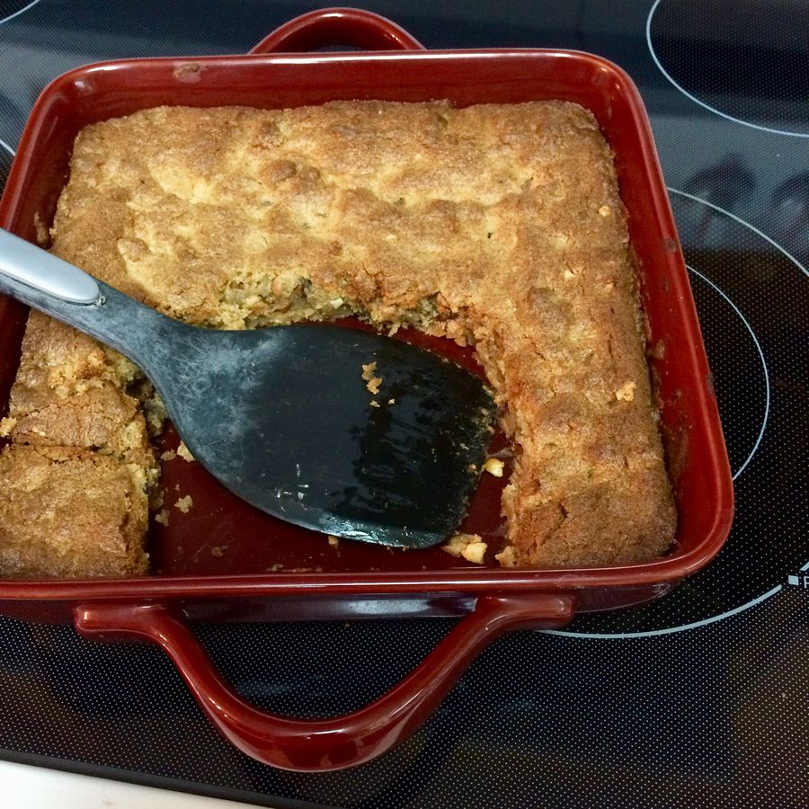

Based on Chrissy Teigen Cravings, pg. 243
Personal rating: 1 / 5

1 stick butter, slightly softened
2/3 cup crunchy peanut butter
3/4 light brown sugar, packed
2/3 cup granulated sugar
2 tsp vanilla extract
2 eggs
1.25 cups flour
1 tsp salt
1 tsp baking powder
2/3 cup peanut butter (or chocolate) chips
2/3 cup chocolate chips (semi-sweet or dark)
Preheat oven to 350 and butter a 10 inch iron skillet
With a wooden spoon, beat together the butter, peanut butter, brown sugar, and granulated sugar until creamy
Add the vanilla, then beat in one egg at a time
In a small bowl, whisk together the flour, salt, and baking powder
Add the flour mixture to the main mix, then mix in the peanut butter and chocolate chips
Spread the batter into the skillet and bake for 40-45 (when the center is soft and gooey, but outside is golden brown)